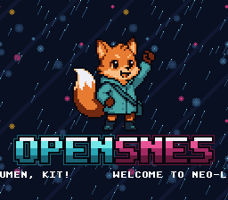

|
OpenSNES
Modern Open-Source SNES Development SDK
|
|
OpenSNES
Modern Open-Source SNES Development SDK
|
Three Mode 1 background layers displayed simultaneously with independent scroll behavior — the title screen of the Néo-Lumen examples: BG1 (the night and its rain, a picture that repeats) auto-scrolls diagonally every frame, BG2 (the logo, Kit and the wordmark) remains fixed in place, and BG3 carries a line of text that slides left — a scrolling message is a scrolled background like any other. This demonstrates how the SNES PPU can scroll each background layer independently, which is the foundation for parallax effects, title screens with animated backgrounds, and layered game worlds.

Mode 1 provides three background layers: BG1 and BG2 are 4bpp (16 colors each), and BG3 is 2bpp (4 colors). Each layer has its own tilemap and tile data in VRAM, and each can reference a different palette slot from CGRAM.
BG3's 2bpp palettes come from CGRAM 0-31, the same colours as the 4bpp layers' first two slots: here BG2 takes 0-15 and BG1 16-28 (the rain has thirteen colours), so the text takes 2bpp slot 7, colours 28-31 — colour 28 is the slot's transparent one, and 29 is free. In Mode 1, BG3 is behind the other layers unless BG3_MODE1_PRIORITY_HIGH is set and its tiles carry the priority bit — both are, so the message is in front.
With three active backgrounds, you must ensure their tile data and tilemaps do not overlap in VRAM. vram.spec lists the regions and vram_map.h is generated from it (devtools/vram_layout):
| VRAM Address | Content | Size |
|---|---|---|
| $1400 | BG2 tilemap (32x32) | 2048 bytes |
| $1800 | BG1 tilemap (32x32) | 2048 bytes |
| $1C00 | BG3 tilemap (32x32) | 2048 bytes |
| $2000 | BG3 font (2bpp) | up to 8 KB |
| $4000 | BG1 tile data (the rain, 102 tiles) | up to 8 KB |
| $5000 | BG2 tile data (the logo, 247 tiles) | up to 8 KB |
CGRAM holds 256 colors organized as 16 slots of 16 colors each for 4bpp modes. Each tilemap entry includes a 3-bit palette number that selects which 16-color slot to use. In this example, BG2 uses palette slot 0 (colors 0-15) and BG1 uses palette slot 1 (colors 16-31). palette-entry = 1 in res/rain.png.toml tells the converter to encode palette slot 1 into BG1's tilemap entries. The logo's colour 0 is its sky: transparent on BG2, so the rain shows through, and CGRAM 0, the backdrop.
In Mode 1, at the same tile priority, BG1 is drawn in front of BG2. The rain is opaque, so it would hide the logo entirely: priority = true in res/logo.png.toml sets the priority bit on every logo tile, and a priority-1 BG2 tile is drawn in front of a priority-0 BG1 tile. The logo's sky (colour 0) stays transparent, so the rain shows around Kit.
The SNES PPU has per-layer scroll registers: BG1HOFS/BG1VOFS ($210D/$210E) for BG1 and BG2HOFS/BG2VOFS ($210F/$2110) for BG2. By calling bgSetScroll() only for BG1 and never for BG2, the rain moves while the logo stays fixed at position (0, 0).
This example has no interactive controls.
Each background gets its own tileset, palette, and palette slot. bgInitTileSet() loads tile graphics to VRAM and palette colors to CGRAM in a single call:
Tilemap data is DMA'd to the addresses configured in bgSetMapPtr(). This must happen during VBlank or force blank since the PPU ignores VRAM writes during active display:
Each frame the camera of BG1 moves one pixel right and two up, so the rain falls one pixel left and two down — the slope of its streaks. The picture is a 128x128 motif repeated, so the 256-pixel wrap of the tilemap is seamless. BG2 has no scroll calls, so it stays fixed:
res/logo.png is the logo of assets/ on a transparent sky, res/rain.png the night drawn by devtools/art_assets/build.py (rain): CC0, see assets/neo-lumen/README.md.
Then open mixed_scroll.sfc in luna (luna-gui mixed_scroll.sfc) or any emulator. You should see the logo with the rain falling behind it, and the message sliding along the bottom.
console, sprite, dma, background, text (LIB_MODULES in the Makefile).